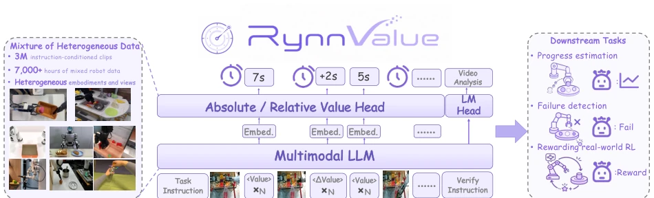
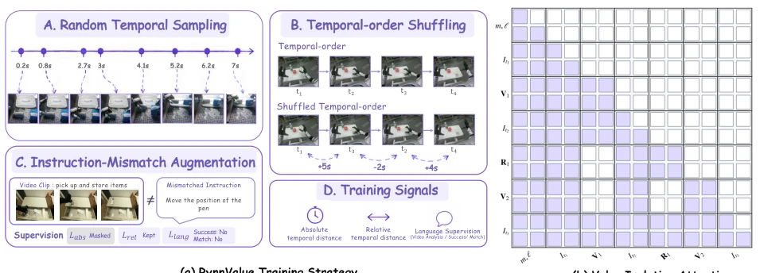
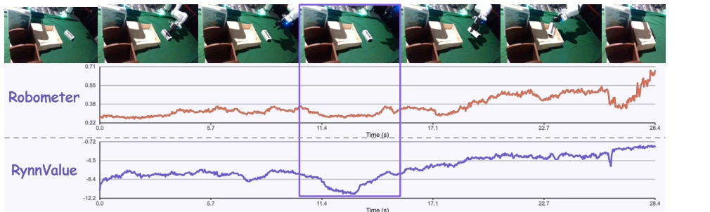
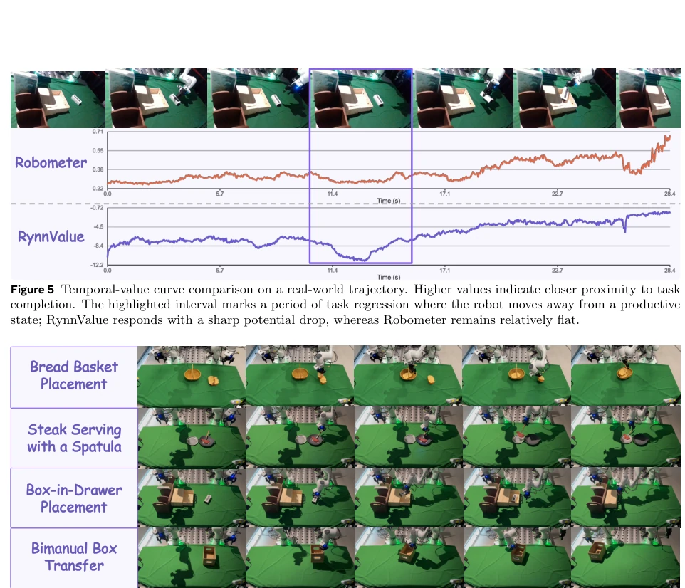
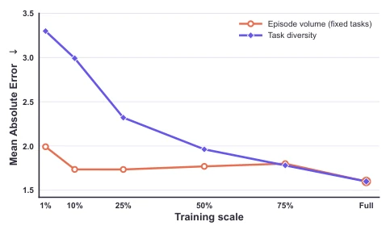

RynnValue: Scaling Robotic Value Foundation Models with Temporal Distance
Dongchi Huang, Hongyin Zhang, Bohan Hou, Siteng Huang, Zhian Su, Hang Guo abspdf
论文点评Review
这篇论文给机器人奖励模型界上了一课：与其费劲标注偏好，不如直接算时间。RynnValue 用“时间距离”替代了传统的偏好或进度标注，在 7000 小时数据上训练，效果居然比偏好监督的 SOTA 还好。这招“时间即价值”确实聪明，省去了大量人工标注成本。不过，把时间直接当价值，在长程任务里会不会有偏差？比如机器人磨蹭半天但没做错，时间值低但质量高，模型能分得清吗？论文没细说。另外，虽然挂着“基础模型”的名头，本质上还是个价值预测器，别指望它能直接生成动作。数据清洗和子任务分割的功夫没少花，但“时间即价值”这个假设在复杂动态环境里是否稳健，还得看后续验证。总的来说，是个实用的工程突破，给奖励模型设计提供了新思路，但别吹过头了，毕竟时间不等于质量，尤其是在那些需要“慢工出细活”的任务里，模型可能会误判。
This paper delivers a lesson to the robot reward modeling community: rather than expending effort annotating preferences, it is better to calculate time directly. RynnValue substitutes traditional preference or progress annotations with 'time distance,' achieving performance superior to preference-supervised SOTA despite training on 7000 hours of data. This 'time is value' strategy is indeed clever, saving a large amount of manual annotation costs. However, does treating time directly as value introduce bias in long-horizon tasks? For instance, if a robot lingers for a long time but does nothing wrong, resulting in low time value but high quality, can the model distinguish this? The paper does not elaborate. Furthermore, although labeled as a 'foundation model,' it is essentially a value predictor; do not expect it to generate actions directly. Considerable effort was invested in data cleaning and subtask segmentation, yet whether the 'time is value' assumption remains robust in complex dynamic environments requires further verification. Overall, this represents a practical engineering breakthrough offering new perspectives for reward model design, but one should avoid overhyping it, as time does not equate to quality, particularly in tasks requiring 'meticulous work takes time,' where the model may misjudge.
The scalability bottleneck of general robot policies lies in reward supervision. Existing general reward models rely on task-internal anchors, such as preferences [26] or normalized progress [16]. Preference annotation is costly and difficult to reuse across data sources; normalized progress is merely coordinates within a trajectory, failing to align with the value definition in control theory and struggling to maintain consistency across different tasks and robot morphologies [25, 24]. RynnValue proposes reconstructing the supervision target as 'time distance' (cost-to-go), defined as the directed time cost from observation to the language-specified goal. This target can be derived directly from timestamps without preference pairs or progress annotations, supporting large-scale heterogeneous data mixed training. The core motivation is to identify a scalable, preference-free value target that unifies heterogeneous data interfaces and addresses the inability of existing methods to generalize to unseen task morphologies. Specifically, normalized progress lacks comparability across tasks, while time distance offers a unified physical dimension.
RynnValue is constructed based on RynnBrain [5], with the overall workflow divided into data preparation, training strategy, and model architecture. The data layer processes 7000+ hours of heterogeneous data via subtask segmentation and deadline relabeling to generate timestamp-based absolute remaining time and relative displacement labels. Regarding training strategy, random time sampling breaks fixed interval patterns, time order shuffling prevents the model from exploiting sequence position shortcuts, and Value-Isolation Attention is introduced to prevent mutual interference of value queries across different observations. Architecturally, Grouped temporal queries are employed, where each observation corresponds to a group of absolute and relative value query tokens, predicting the symlog binned time distance through two Distributional Heads. Simultaneously, the language branch is retained for video analysis and task verification. During inference, the time distance is negated and transformed into potential-based shaping to serve as the reward interface. This design ensures the model must rely on visual evidence rather than sequence positions, thereby enhancing generalization capabilities.

Figure 1 Overview of RynnValue. RynnValue is a language-conditioned value model trained on over 7,000 hours of heterogeneous embodied data, comprising roughly 3M instruction-conditioned trajectory clips across diverse embodiments, viewpoints, and task domains. Given a language instruction and a sequence of sampled observations, the model builds an interleaved multimodal sequence of repeated absolute-value and relative-value queries, which RynnBrain encodes in a single forward pass. Two distributional heads then predict the absolute temporal distance to task completion and the signed relative temporal displacement between observations, while the language branch produces video analysis and language-conditioned verification. The resulting temporal values serve as a unified interface for progr

Figure 2 RynnValue training pipeline and value-isolation attention. (a) Training strategy. Random temporal sampling and temporal-order shuffling suppress shortcuts tied to sampling intervals and sequence position, while instruction- mismatch augmentation strengthens language–visual grounding. RynnValue jointly learns absolute temporal distance, relative temporal displacement, and natural-language supervision. (b) Value-isolation attention. Within each value- query group, repeated queries attend to one another and to the language–visual context, while remaining isolated from other value-query groups. Colored cells denote visible attention connections.
In the RBM-EVAL-OOD benchmark, RynnValue-8B achieved an average Kendall's τa of 0.675, outperforming fully preference-supervised Robometer (0.655) [16] and progress-only variants (0.292). In real-world Franka robot tasks, acting as a reward interface, online RL success rates increased from 52.5% to 72.5%, and offline RL from 63.8% to 82.5%. Ablation experiments reveal that removing time order shuffling leads to a significant performance drop to 0.189, demonstrating that preventing sequence position shortcuts is critical. Data expansion analysis indicates that task diversity reduces error more effectively than simply increasing the number of episodes. Instruction-trajectory alignment analysis also demonstrates its ability to better distinguish matching and mismatching pairs. Specific tasks include bread basket placement and steak serving, showcasing robustness under physical execution noise.

Figure 5 Temporal-value curve comparison on a real-world trajectory. Higher values indicate closer proximity to task completion. The highlighted interval marks a period of task regression where the robot moves away from a productive state; RynnValue responds with a sharp potential drop, whereas Robometer remains relatively flat.

Figure 6 Representative demonstrations for real-world evaluation. Each row shows a sequence of observations from one manipulation task: Each row shows a sequence of observations from one manipulation task. These tasks cover object grasping, spatial manipulation, and articulated-object interaction.
其他图片Other Figures

Figure 4 Scaling episode volume vs. task diversity. Mean absolute temporal-distance error on a held-out validation set of unseen tasks. We independently scale two aspects of the training set: (orange) episode count with the full task set fixed, and (blue) task count with per-task episode counts fixed. Both curves converge to the same full-scale training set at 100%. Task diversity yields a consistently steeper error reduction than episode volume, which saturates early.